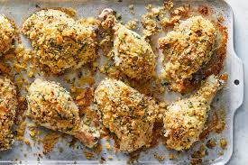

Mustard Chicken Thighs

Home
Description
This recipe is from Jacques Pepin's book Quick and Simple.This recipe simply is quick and simple and tastes FANTASTIC.
It is a recipe I use multiple times once a week. Using 6 ingredients and only one sheet pan makes clean up -the worst part am I right?-
a breeze. I like to pair the chicken with a vegetable, such as Roasted Butternut Squash or Maple Balsamic Brussel Sprouts, and a carb
like, Garlic Parmesan Pasta or Mushroom Rice.
Ingredients
- 4 skinless chicken thighs
- 1/2 teaspoon salt
- 1/2 teaspoon freshly ground black pepper
- 3 1/2 tablespoons olive oil
- Panko seasoned breadcrumbs
- 2 tablespoons dijon style mustard
Steps
- Preheat the oven to 425. Prep the chicken thighs by sprinkling salt, pepper, and 2 tablespoons
olive oil and arrange the legs on a baking sheet lined with aluminum foil. Bake for 15 minutes. The
chicken will only be partially cooked.
- Add the remainin 1 1/2 tablespoon of olive oil to the breadcrumbs and mix together.
- Remove the chicken from the oven, brush the surface with the mustard, and pile the breadcrumbs on top,
pressing lightly to make them adhere.
- Return the chicken to the oven and bake for 20 to 25 minutes, until the breadcrumbs are brown and
and the meat is tender.
- Transfer the legs to individual plates and serve immediately.